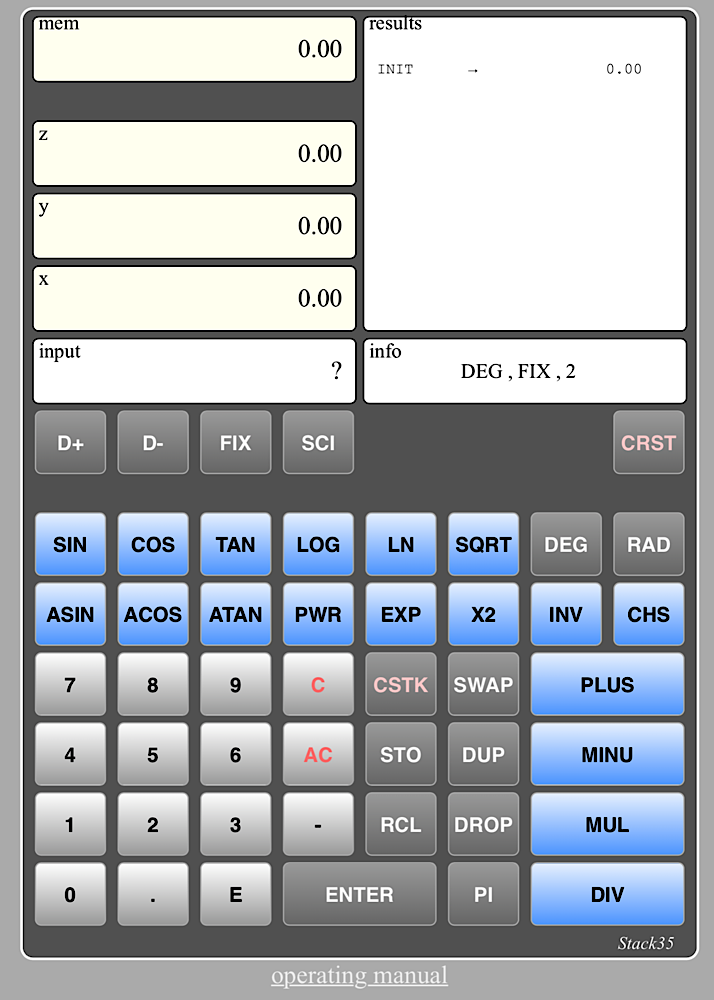
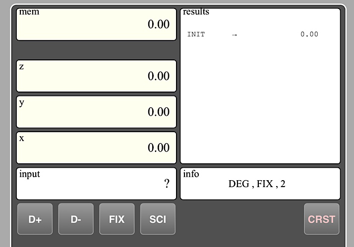
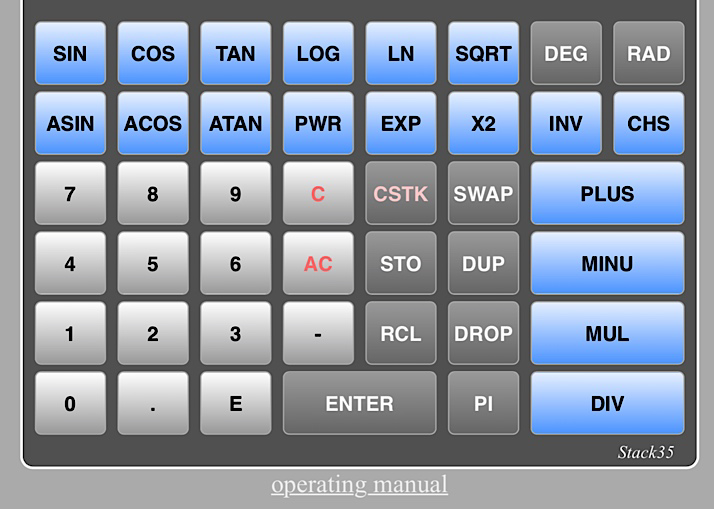

Stack35 an online RPN calculator
Stack35

the calculator consist of :
- 7 displays screens on the top
- 48 keys
- a link, below the "casing" to this operating manual
It does mathematical calculations according to the Reverse Polish Notation (RPN), which has been widely implemented in the Hewlett Packard calculators' starting in the 1970's.
This means that it uses a "stack", here the displays referenced as
x, y, z, to execute the operations.
To enter a number we will use the number keys (the white ones) to set the number in the
INPUT display then use the
ENTER key to push it in the fist stack level (the
x one).
Before going into the details let's do a simple exercise by adding 4.5 to 3.8 :
- with the white keys tap in 3.8 which displays in the "input" display.
- tap the ENTER key. The content of the input display is moved to the x register (calculation stack)
- with the white keys tap in 4.5 which displays in the "input" display.
- tap the ENTER key again. The value of the x register is moved up to the y register and the content of the input display is moved to the x register. We have now 3.8 in the y register and 5.5 in the x register
- tap the PLUS key (a blue one). The y register is added to the x one which now display the 8.3 value
Notice : if you tap directly the
PLUS key after entering the second value (skipping the second
ENTER key), the calculator will perform the entering step automtically. This will speed up the process.
The display area

There are 7 displays grouped in 4 main areas:
- the stack area includes the calculation registers named x, y, z and the memory register named mem
- the input area is used to enter a new number, using the "white keys" (see below key pad)
- the results area show the last 15 operations done by the calculator
- The info area show by default the angle mesurement unit (radian / degrees) and the display mode (fixed or scientific, number of decimales). When needed it also shows a temporary warning message.
The keyboard area

There are 48 keys grouped in 3 main categories:
- the white keys, including the figures from 0 to 9, the decimal point, the minus sign... that is to says the ones used to enter a new number
- the grey keys which are related to stack and memory manipulations, display modes...
- the blue keys which are used for mathematical operations
The white keys
0 to 9 numbers
. decimal point
- minus sign, used to enter negative numbers or negative exponent. example : -123 or 456E-3. It should not be confused with the mathematical operation minus, which substact one nulber to an other one.
E exponent sign.
C for clear. Remove the last entered sign from the input display.
AC for all clear. Erase the input display.
The grey keys
ENTER enter the current input value in the first level of the pile, x, and erase the input display
PI the mathematical Pi value
STO for store. The current x value is stored in the memory register.
Notice that is a value is set in the input register, it will be moved to the x ones, then stored to the memory.
Storing a value innteh memory doesn't erase it from the x register.
RCL for recall. The stack is moved up and the current memory value is stored in the x register.
Recalling a value from memory doesn't erase it from the memory register
SWAP for clear. Remove the last entered sign from the input display.
DUP for duplicate the x register. y is moved to z, and y is set to x .
DROP for dropping. The stack is moved down: x is set to y ,y is set to z. z is set to 0. Notice that the original x value is lost.
SWAP for swap. The values of the x register and the y one are exhanged.
CSTK for clear stack. All stack registers and the memory register are set to 0
DEG for degree. All trigonometric calculations will be done using degree unit.
RAD for radian. All trigonometric calculations will be done using radian unit.
D+ for decimal +. Increase the number of displayed decimal by one. Notice that the number of decimals is limited to 8.
D- for decimal -. Decrease the number of displayed decimal by one. Notice that the minimum number of decimals is 0.
FIX for fixed mode. Set the fixed mode wher numbers are represented directly, without exponents.
Notice : some numbers, big ones, or with lotof displayed decimals, could be to large to be displayed (more than 16 characters. When this happen the calculator will automatically move to the scientific mode. A warning message will be displayed in the info display.
SCI for scientific mode. Number are displayed with a mantissa and an exponent. Example: 123.45 is displayed as 1.23e+2
CRST for clear results. This will clear the results display. New display will start with the CRST command and the last x value
Notice : in order to speed up the data entry into the pile, when a number is set in the input display, when the PI and the STO keys are tapped the transfert from the input register to the x register will be done directly, the ENTER key being optionnal.
Example : 123.45 STO
is equivalent to 123.45 ENTER STO
This is also the case for all the following mathematical operations, the blue keys.
The blue keys
PLUS for plus. x is replaced by x is added to y. y is replaced by z. z is set to 0
MINU for minus. x is replaced by y-x. y is replaced by z. z is set to 0.
MUL for multiplication. x is replaced by x * y. y is replaced by z. z is set to 0.
Notice: if the results exceed the maximum number accepted by the calculator, which is 9.99999999 e+99, a warning is set in the info display and the operation is not done.
DIV for division. x is replaced by y/x. y is replaced by z. z is set to 0.
Notice: if x is equal to 0 a warning is set in the info display and the operation is not done.
INV for inverse. x is replaced by 1/x.
CHS for change sign. x is replaced by -x
SIN for sinus. x is replaced by sinus(x). If the DEG mode is set x will be considered in degrees, is the RAD mode is set x will be considered in radians.
COS for cosinus. x is replaced by cosinu(x). If the DEG mode is set x will be considered in degrees, is the RAD mode is set x will be considered in radians.
TAN for tangent. x is replaced by tangent(x). If the DEG mode is set x will be considered in degrees, is the RAD mode is set x will be considered in radians.
Notice if x is equal to +90 degrees or -degrees (+pi/2 or -pi/2 in radians) a warning is set in the info display and the operation is not done.
ASIN for arcsinus. x is replaced by arcsinus(x). The result value will be in degrees if the DEG mode is set, in radians if the RAD mode is set.
Notice if x > 1 or x < -1 a warning is set in the info display and the operation is not done.
ACOS for arccos. x is replaced by arccosinus(x). The result value will be in degrees if the DEG mode is set, in radians if the RAD mode is set.
Notice if x > 1 or x < -1 a warning is set in the info display and the operation is not done.
ATAN for arctangent. x is replaced by arcsinus(x). The result value will be in degrees if the DEG mode is set, in radians if the RAD mode is set.
LOG for logarithm to base 10. x is replaced by logarithm(x) in base 10.
Notice: if x = 0 or x < 0 a warning is set in the info display and the operation is not done.
PWR for power. x is replaced by x power y. y is replaced by z. z is set to 0.
Notice: if the results exceed the maximum number accepted by the calculator, which is 9.99999999 e+99, a warning is set in the info display and the operation is not done.
LN for neper logarithm. x is replaced by neper logarithm(x).
Notice: if x = 0 or x < 0 a warning is set in the info display and the operation is not done.
EXP for exponential. x is replaced by e power x. y is replaced by z. z is set to 0.
Notice: if the results exceed the maximum number accepted by the calculator, which is 9.99999999 e+99, a warning is set in the info display and the operation is not done.
SQRT for square root. x is replaced by square root(x).
Notice: if x < 0 a warning is set in the info display and the operation is not done.
X2 for x square. x is replaced by square(x).
Notice: if the results exceed the maximum number accepted by the calculator, which is 9.99999999 e+99, a warning is set in the info display and the operation is not done.
v1.0